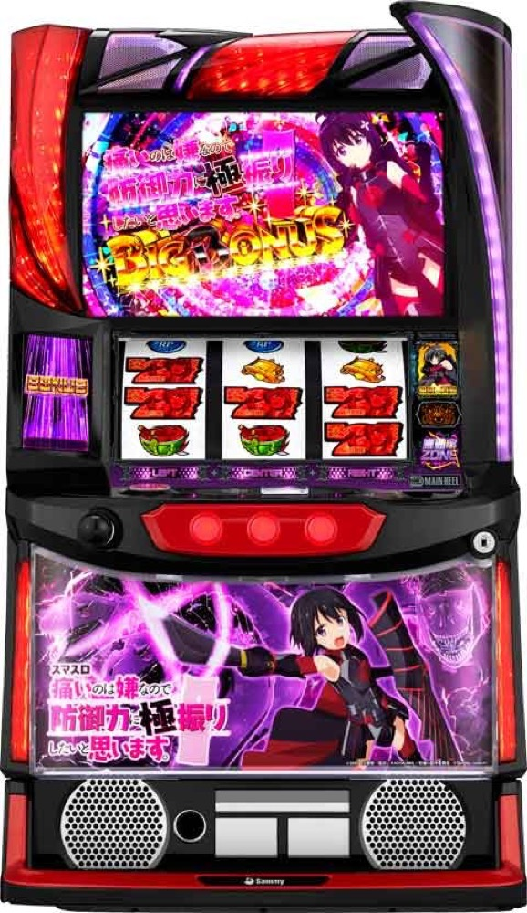

スマスロ痛いのは嫌なので防御力に極振りしたいと思います。
高確率ZONEを突破し、ボーナスと防御状態を約77〜94%でループ。
- 導入
- 2024年6月
- メーカー
- サミー
- 分類
- パチスロ
主要スペック
高確率ZONEからBIG・REG・エピソードBONUSを目指し、ボーナス後は必ず防御状態へ。防御状態Lv.0〜4、天使ZONE、暴虐ZONEまでを実機の順番に沿って体験できます。
- 運営高確率はボーナス期待度約50%
- 防御状態は初回CZ期待度88%以上・以後約77〜94%ループ
- 天使ZONEは30G、暴虐ZONEは50G・期待枚数約3500枚
スマスロ痛いのは嫌なので防御力に極振りしたいと思います。の見どころと計算条件
高確率ZONEからBIG・REG・エピソードBONUSを目指し、ボーナス後は必ず防御状態へ。防御状態Lv.0〜4、天使ZONE、暴虐ZONEまでを実機の順番に沿って体験できます。
スマスロ 防振りを数字で早分かり
高確率ZONE、3種類のBONUS、防御状態Lv.0〜4、天使ZONE、暴虐ZONEを個別に記録します。
30秒で分かるスマスロ 防振り
約50%のCZを突破し、ボーナスで防御力を高めながらLv.0〜4の防御状態をループさせるボーナス連鎖型です。
こんな遊び方に向いている
- CZの最後をPUSHで決めたい
- 防御状態のレベルアップと連チャンを追いたい
- 天使ZONE・暴虐ZONEの上位ルートを狙いたい
遊ぶ前に確認したいこと
- 設定別初当り・純増・防御状態は公開値
- BIG・REG・特化ZONEの代表獲得枚数を反映
- 非公開のルート配分は体験用代表値
通常時と3種類の高確率ZONE
通常時はレア役・ヒドラ目・規定ゲーム数から高確率ZONEを目指します。運営高確率のボーナス期待度は約50%。機械神高確率と極・高確率は成功でエピソードBONUS濃厚です。
シミュレーターでは初当り確率を設定別に抽選し、CZ種類と最終PUSHを機種専用画面で表示します。
3種類のBONUS
REGは約100枚、BIGはシングル揃い約150枚・ダブル揃い約250枚。エピソードBONUSは約250枚を獲得し、天使ZONEまたは暴虐ZONEへの分岐に期待できます。
防御状態中のBIGはダブル揃い濃厚です。ボーナス中は防御力ポイントとスキルを抽選し、次の防御状態を強化します。
防御状態Lv.0〜4
ボーナス後は必ず防御状態へ。初回のCZ期待度は88%以上、CZ出現率は約1/11.9です。レベルはLv.0〜4の5段階で、CZループは約77・79・83・86・94%です。
最大80Gまでに転落しなければ無限CZへ。強ヒドラ目は無限の運営高確率または極・高確率濃厚です。
天使ZONEと暴虐ZONE
天使ZONEは30G継続し、高確率ZONE出現約1/5.5、ボーナス期待度約70%。
暴虐ZONEは50G継続し、暴虐高確率成功時は暴虐BONUSへ。突入時の期待枚数は約3500枚とされる本機最上位の出玉ルートです。
固定条件と簡略化する範囲
- 約33G/50枚・1,000円46枚貸し・5.2枚交換で固定
- 設定1〜6を均等抽選
- 防御状態のCZ出現率・ループ率・特化ZONEは公開値を優先
- CZ種類・防御Lv・エピソード分岐など非公開配分は体験用代表値
- 19,000枚到達時はコンプリート表示
平均Gと投資目安の計算
掲載する防振りBONUS初当り約1/319は設定1基準です。当サイトでは50枚あたり33G、1,000円46枚貸しの固定条件から、設定1基準の平均投資目安を約10,500円と計算します。
シミュレーターでは設定1〜6を均等抽選します。設定1〜6で公開されている初当り値を個別に使います。公開されていない特化ゾーン・上位到達率の設定差は加えません。 換金は5.2枚交換で固定し、結果とランキングに設定を表示します。
シミュレーション結果の見方
当るまで高確率ZONE・防振りBONUSまでのゲーム数
設定設定1・2・3・4・5・6から抽選された今回の設定
上位到達暴虐高確率と暴虐ZONEへの到達
最終収支差枚と5.2枚交換の収支目安
結果は自動で「マイ記録」に保存され、同じ機種を何回試したか、最高収支、勝率をあとから確認できます。
簡易シミュレーターについて
高確率ZONE・防振りBONUS・暴虐ZONEの流れを固定条件で体験できます。JavaScriptを有効にすると、この位置にシミュレーター、演出、マイ記録、機種別ランキングが表示されます。
結果は娯楽・確率理解のための参考表示です。金銭的価値や交換価値はなく、実際の勝敗や収支を保証しません。18歳未満の方の利用はお控えください。
スマスロ 防振りのよくある質問
スマスロ 防振りはどんな台？
高確率ZONEからBIG・REG・エピソードBONUSを目指し、ボーナス後は必ず防御状態へ。 運営高確率はボーナス期待度約50%が主な確認ポイントです。
スマスロ 防振りの平均投資目安は？
設定1基準の防振りBONUS初当り約1/319と、50枚あたり33G・46枚貸しの固定条件から、平均10,500円を目安として表示します。実際の設定や遊技状況で結果は変わります。
設定とゲームの流れはどう抽選する？
開始時に設定1・2・3・4・5・6から1つを均等抽選し、高確率ZONE、防振りBONUS、暴虐高確率、暴虐ZONEの順で到達を判定します。設定は最終結果とランキングに表示します。
収支はどう計算する？
1,000円46枚貸し・5.2枚交換の固定条件で投資、換金、収支目安を計算します。実店舗の再プレイ、持ちメダル、端数処理は含みません。